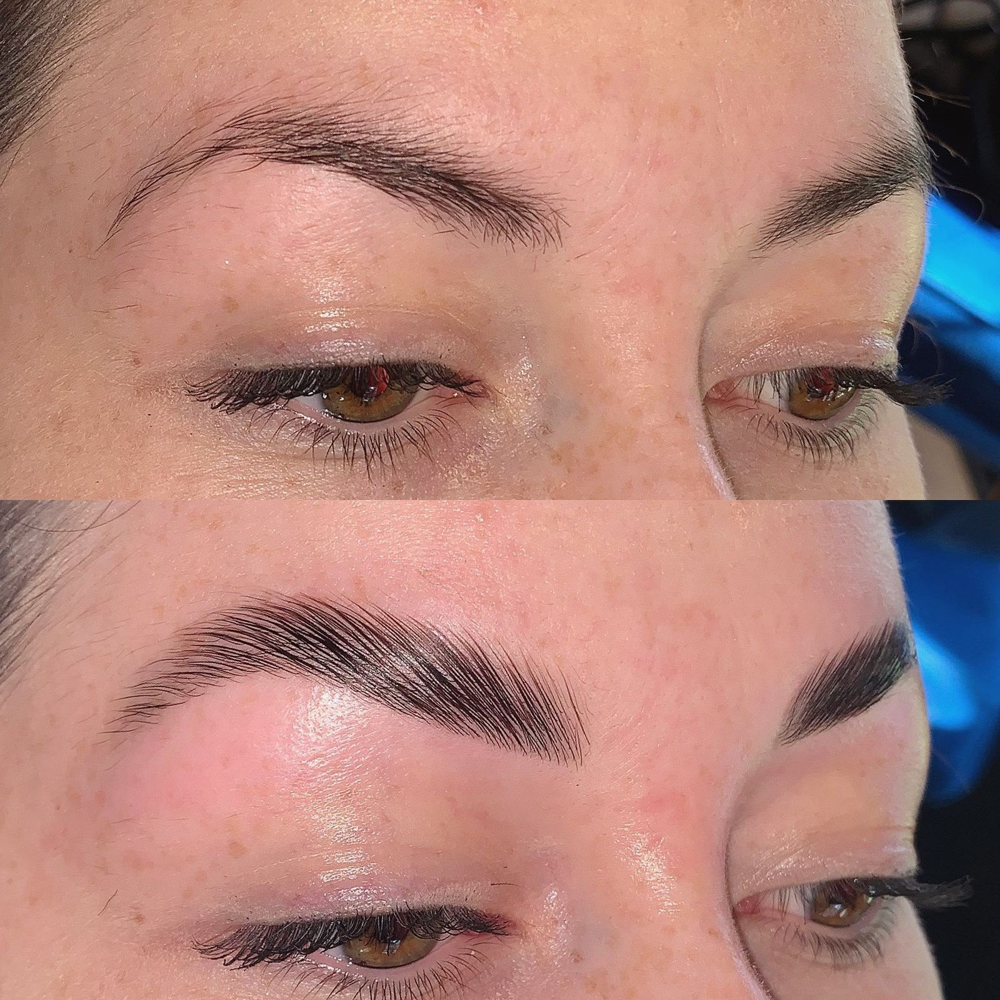
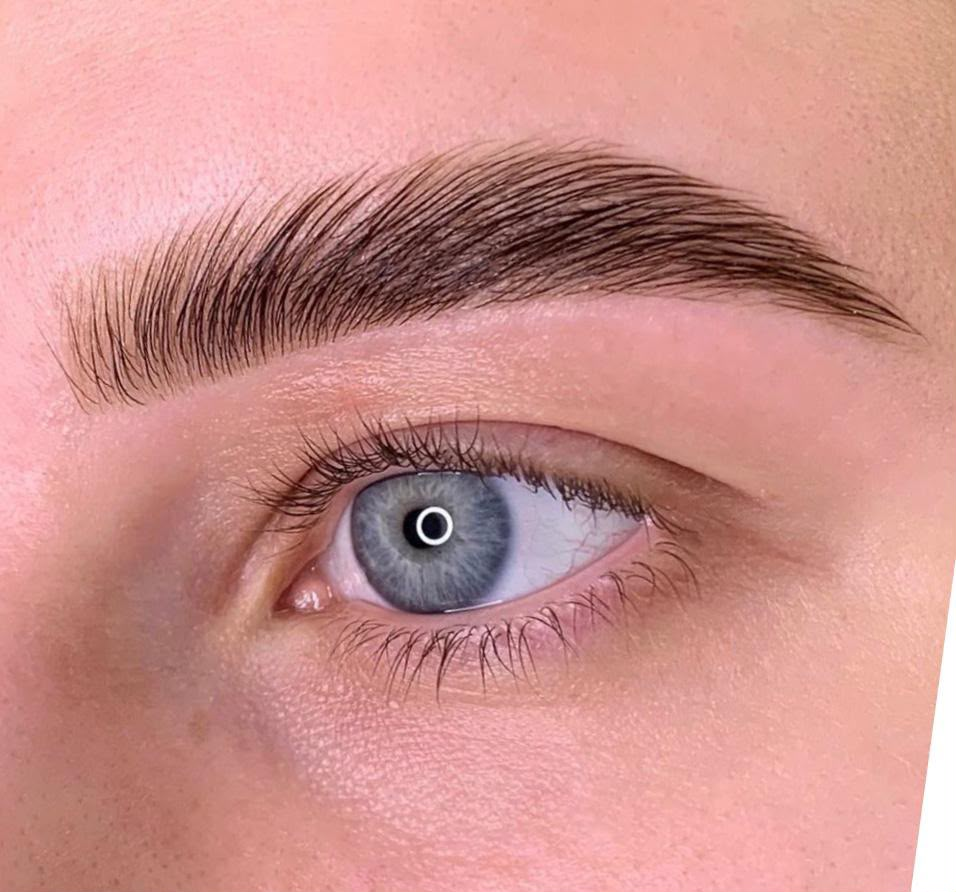
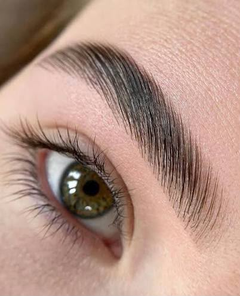
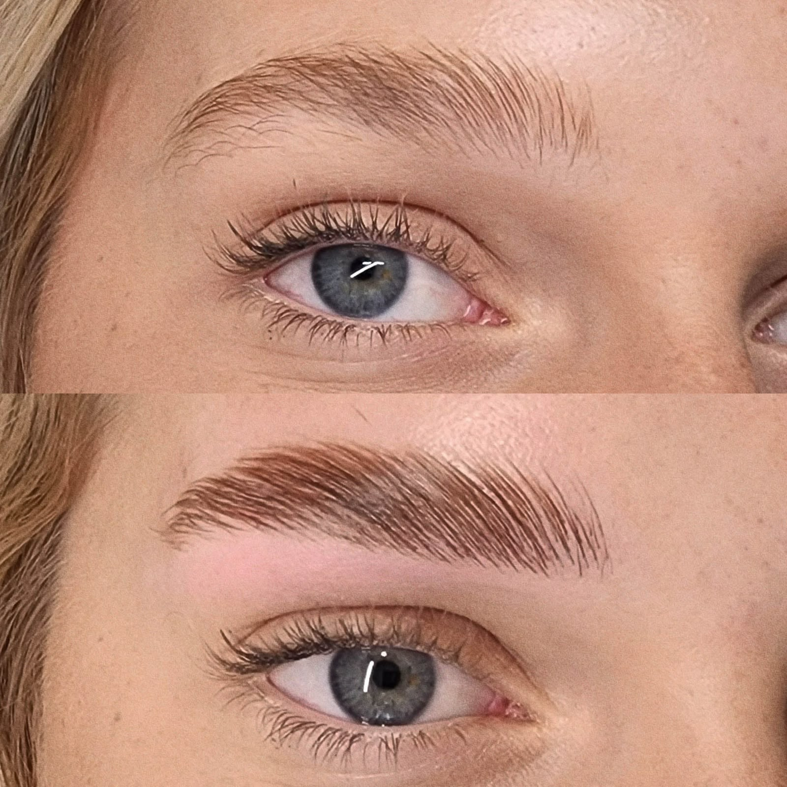

Brows Services
Lamination, tinting & microblading for brows that frame your face.
Real Results Gallery
Brow lamination before & after, straight from our chair to your feed.




A semi-permanent treatment that straightens and sets brow hairs in place for a fuller, brushed-up look. Includes tinting to enhance color and definition. Duration: ~45 mins.
AED 250
Hand-drawn, hair-like strokes using pigment to create natural-looking, fuller brows. Ideal for sparse or uneven brows. *Results last 1-2 years. Duration: ~2 hours*
AED 950